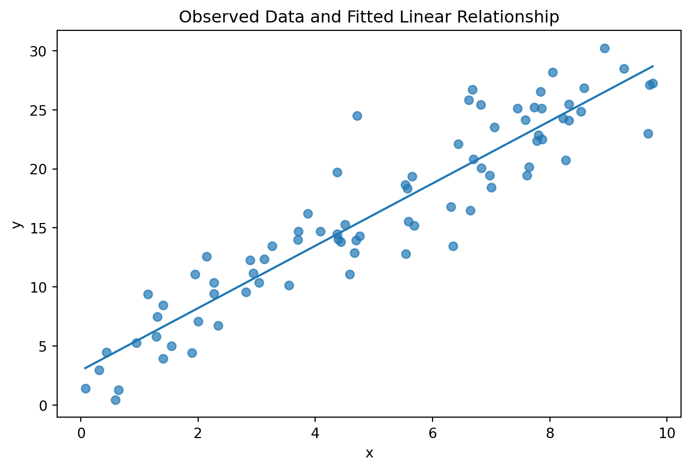

6Linear Regression: From Relationship to Prediction
6.1 Learning Objectives
By the end of this chapter, you should be able to:
express simple and multiple linear regression mathematically;
interpret intercepts and coefficients in context;
explain ordinary least squares as loss minimization;
connect residuals, MSE, RMSE, MAE, and \(R^2\) to model behavior;
fit regression models with scikit-learn and statsmodels;
distinguish predictive modeling from statistical inference;
diagnose nonlinearity, heteroscedasticity, influential observations, and multicollinearity;
explain why association coefficients should not automatically be interpreted causally;
use transformations and interactions when substantively justified;
explain the bias–variance motivation for regularization;
fit and compare OLS, Ridge, and Lasso within leakage-safe pipelines;
evaluate regression using held-out data and appropriate baselines.
recognize regression outputs within computer-vision workloads without confusing prediction with causal explanation.
6.2 Why This Matters
Linear regression is one of the most important models in statistics and machine learning. Its value is not that every relationship in the world is linear. Its value is that it gives us a transparent mathematical laboratory for understanding prediction, loss, coefficients, residuals, assumptions, generalization, and regularization.
ImportantCentral Question
How can a linear model transform observed relationships into useful predictions—and what must be true before we trust its coefficients or predictions?
6.2.1 Connection to the Workflow
Chapters 4 and 5 established the problem specification and the data pipeline. Those choices now become part of the model itself: the target defines what is predicted, the features define what information is available, and the evaluation boundary determines what counts as honest evidence. Linear regression provides the first transparent setting in which to study how those decisions interact with model fitting and generalization.
6.3 The Simple Linear Model
For one predictor,
\[
y_i=\beta_0+\beta_1x_i+\epsilon_i,
\]
where \(\beta_0\) is the intercept, \(\beta_1\) the slope, and \(\epsilon_i\) the unexplained component.
The fitted prediction is
\[
\hat y_i=\hat\beta_0+\hat\beta_1x_i.
\]
The residual is
\[
e_i=y_i-\hat y_i.
\]
A slope of 2.4 means that a one-unit increase in \(x\) is associated with an expected 2.4-unit increase in the fitted outcome, holding nothing else constant in a one-predictor model. It does not, by itself, establish causation.
6.4 See the Line
import numpy as npimport matplotlib.pyplot as pltfrom sklearn.linear_model import LinearRegressionrng = np.random.default_rng(42)x = rng.uniform(0, 10, 80)y =4+2.5*x + rng.normal(0, 3, 80)X = x.reshape(-1, 1)model = LinearRegression().fit(X, y)y_hat = model.predict(X)plt.figure(figsize=(8, 5))plt.scatter(x, y, alpha=0.7)order = np.argsort(x)plt.plot(x[order], y_hat[order])plt.xlabel("x")plt.ylabel("y")plt.title("Observed Data and Fitted Linear Relationship")plt.show()model.intercept_, model.coef_[0]

6.5 Ordinary Least Squares
OLS chooses coefficients that minimize the residual sum of squares:
This reveals a connection to Chapter 3: the slope depends on how \(x\) and \(y\) vary together relative to the variation in \(x\).
6.6 Matrix Form
For multiple predictors,
\[
y=X\beta+\epsilon.
\]
Under the usual full-rank conditions, the OLS solution can be written
\[
\hat\beta=(X^\top X)^{-1}X^\top y.
\]
This expression is conceptually useful, but numerical software generally does not need us to calculate an explicit matrix inverse. Stable numerical methods are preferred.
A coefficient \(\beta_j\) represents the expected difference in the fitted outcome for a one-unit difference in \(x_j\), holding the other included predictors constant, under the model specification.
That interpretation depends on units, coding, interactions, transformations, and which variables are included.
Figure 6.1: Residuals plotted against fitted values can reveal systematic model failure.
A useful residual plot should not show obvious systematic structure. Patterns can suggest nonlinearity, changing variance, omitted structure, unusual observations, or other specification problems.
Confidence intervals and p-values answer inferential questions under model assumptions. They do not substitute for out-of-sample predictive evaluation.
ImportantTwo Questions, Two Toolkits
Inference: What do the estimated relationships suggest, with uncertainty, under stated assumptions?
Prediction: How accurately does the fitted function generalize to unseen observations?
A strong analysis may need one, the other, or both.
6.14 Same Model, Different Question
The distinction between explanatory and predictive modeling is methodological rather than merely terminological: the same model family can be evaluated differently depending on whether the goal is explanation or out-of-sample prediction (Shmueli 2010).
For the observed sample, the regression model can be written
\[
y=X\beta+\epsilon,
\]
can support predictive, inferential, or causal questions.
Predictive: How accurately can (Y) be predicted for new observations?
Inferential: What does the sample permit us to conclude about a population relationship?
Causal: What would happen to (Y) if we intervened on (X)?
A statistically detectable coefficient may contribute little practical predictive value, while a highly predictive feature may not admit a causal interpretation.
6.14.1 Weak Predictive Gain Despite a Real Relationship
Before interpreting a regression model, state whether the goal is prediction, association/inference, or causal effect. Do not move between these goals simply because the same equation appears in all three settings.
6.15 Nonlinearity
A linear model can be linear in its parameters while using transformed features.
When \(\beta_3\neq0\), the relationship involving \(x_1\) depends on \(x_2\).
Interactions should have substantive meaning rather than being generated indiscriminately.
6.17 Multicollinearity
When predictors contain overlapping information, coefficient estimates can become unstable.
For two highly related predictors, the model may predict adequately while individual coefficients vary substantially across samples.
This is an important distinction:
Coefficient instability and predictive failure are not the same thing.
Multicollinearity motivates careful feature reasoning and, in predictive settings, regularization.
6.18 Ridge Regression
Ridge regression stabilizes coefficient estimation by adding an \(L_2\) penalty, following the regularization approach introduced by Hoerl and Kennard (Hoerl and Kennard 1970):
A very flexible model may fit training data extremely well but respond strongly to sample-specific noise. A constrained model may introduce bias while reducing variance.
Regularization deliberately trades some fitting freedom for stability.
For formal model selection, the scaling and hyperparameter search must remain inside the resampling workflow. We will deepen this in Chapter 16.
6.23 Coefficients Are Not Automatically Causes
Predictive association does not by itself identify an intervention effect; causal claims require assumptions and designs appropriate to causal inference (Hernán and Robins 2020).
It is tempting to say that increasing attendance by one unit causes a 5.2-unit outcome increase. Regression alone does not justify that conclusion.
Confounding, selection, measurement, reverse causation, and model specification all matter.
6.24 Computer Vision Connection: Regression From Images
Computer vision is not limited to classifying images. Many visual tasks contain continuous prediction components.
Examples include:
estimating depth from an image;
predicting object coordinates;
estimating pose or orientation;
predicting image-quality scores;
estimating continuous physical measurements from visual data.
A visual regression problem can still be written conceptually as
\[
\hat y_i=f_\theta(x_i),
\]
where (x_i) is a numerical representation of image (i) and (y_i) is a continuous target.
The statistical cautions from this chapter still apply. A model that predicts a continuous quantity from pixels does not automatically explain the physical or biological mechanism that produced the target.
TipVision Learning Thread
Later computer-vision examples will focus primarily on classification because the handwritten-digits dataset provides a compact reproducible benchmark. This regression connection is included to reinforce that computer vision is a workload containing multiple prediction types, not a synonym for image classification.
6.25 Three Tracks
6.25.1 Health Track
A regression problem might predict a continuous biomarker or physiological measurement. Researchers must distinguish predictive usefulness from etiological interpretation and consider whether survey design or complex sampling affects inferential goals.
6.25.2 Education Track
Institution-level regression might predict future retention or completion rates from prior-year characteristics. Temporal alignment is essential, and rates may have differing denominator reliability.
6.25.3 Open ML Benchmark Track
Benchmark regression datasets are useful for comparing OLS, Ridge, Lasso, nonlinear feature expansion, and sensitivity to scaling under controlled conditions.
6.26 Beyond the Algorithm: Is Simplicity a Limitation or a Strength?
NoteThe Intellectual Value of a Simple Model
A more complex model can be more accurate. It can also be harder to inspect, explain, challenge, and learn from.
Linear regression forces a strong claim: the outcome can be approximated through a weighted combination of represented features. That claim will often be incomplete. Its simplicity, however, makes assumptions visible.
A simple model can serve as:
a baseline;
a diagnostic instrument;
a scientific summary;
a communication tool;
a test of whether complexity is actually necessary.
The relevant question is therefore not:
“Is the model simple?”
but:
“Is the model sufficiently accurate, appropriately specified, and useful for the purpose?”
Complexity should earn its place through evidence.
6.27 AI Pair Programmer
Ask an AI assistant to interpret coefficients from a fitted regression model.
Audit whether it:
respects units;
conditions interpretations on other included predictors;
distinguishes association from causation;
notices transformations and interactions;
treats standardized coefficients correctly;
confuses statistical significance with practical importance;
reports training fit as evidence of generalization.
Then rewrite the interpretation.
6.28 Hands-On Lab: OLS to Regularization
Using a regression dataset:
complete the Chapter 4 Problem Framing Canvas;
complete the Chapter 5 Feature Ledger;
establish a DummyRegressor baseline;
fit OLS in a leakage-safe workflow;
calculate MAE, RMSE, and \(R^2\) on held-out data;
inspect residuals;
fit Ridge and Lasso with scaling inside pipelines;
compare predictive performance;
compare coefficient behavior;
identify at least one possible nonlinearity or interaction;
distinguish predictive findings from inferential or causal claims;
document reproducibility decisions.
6.29 Practitioner Track
A practitioner should be able to fit, evaluate, diagnose, regularize, and communicate regression models while maintaining leakage-safe workflows.
6.30 Researcher Track
A researcher should additionally distinguish predictive from inferential aims, justify model specification, quantify uncertainty when appropriate, diagnose assumptions, and avoid causal overstatement.
6.31 Research Studio
Choose a health or education continuous outcome suitable for a public-data study.
Write:
research problem and contribution;
unit and target;
temporal framing;
candidate predictors with theory;
baseline;
OLS specification;
candidate interaction/nonlinearity;
regularized alternative;
validation strategy;
inferential versus predictive claims;
possible conference/journal contribution;
one claim the design cannot support.
6.32 Professor’s Challenge: The Significant Model
A paper reports:
“Our regression model explains student success. All predictors with \(p<.05\) are important causes. The model has \(R^2=.62\), demonstrating strong predictive accuracy.”
No held-out evaluation is reported. Predictors were selected after examining the full dataset. Several are highly correlated. Residual diagnostics are absent. One predictor is measured after the outcome period begins.
Critique:
“explains”;
causal language;
significance versus importance;
\(R^2\) versus predictive performance;
feature selection leakage;
multicollinearity;
temporal leakage;
missing diagnostics;
absence of a baseline and out-of-sample evaluation.
Redesign the analysis for both an inferential objective and a predictive objective.
6.33 Knowledge Check
What does a regression slope represent?
What does OLS minimize?
How are covariance and the simple-regression slope related?
Why can RMSE and MAE rank models differently?
What does a negative test-set \(R^2\) imply?
Why inspect residuals?
How do inference and prediction differ?
Why can multicollinearity destabilize coefficients?
What does Ridge penalize?
What does Lasso penalize?
Why scale before regularized regression?
What is the bias–variance tradeoff?
Why is a coefficient not automatically causal?
When might a simple linear model be preferable to a more complex model?
How can a coefficient be statistically important but weak for prediction?
Why does strong predictive performance not establish causality?
Why should a predictive regression model be compared with a simple baseline?
6.34 Reproducibility Check
Record:
problem specification;
feature ledger;
split/validation design;
baseline;
preprocessing pipeline;
transformations and interactions;
regression estimator and parameters;
regularization hyperparameters;
metrics;
residual diagnostics;
inferential procedures if used;
random seeds;
package versions;
code generating every reported result.
6.35 Key Takeaways
Linear regression is both a predictive model and a foundation for statistical reasoning.
OLS minimizes squared residual error.
Multiple-regression coefficients are conditional on the model specification.
MAE, RMSE, and \(R^2\) answer different performance questions.
Residuals reveal structure the model failed to capture.
Statistical inference and out-of-sample prediction are related but distinct goals.
Multicollinearity can destabilize coefficients without necessarily destroying prediction.
Ridge and Lasso constrain coefficient magnitude to improve stability/generalization.
Scaling matters when regularization acts on coefficient magnitudes.
Regression coefficients do not establish causation.
Simple models remain valuable when their assumptions, performance, and purpose are appropriate.
The same regression equation can serve different goals, but those goals require different evidence.
Statistical significance does not imply predictive usefulness.
Predictive performance does not establish causal effect.
Hernán, Miguel A., and James M. Robins. 2020. Causal Inference: What If. Boca Raton, FL: Chapman & Hall/CRC.
Hoerl, Arthur E., and Robert W. Kennard. 1970. “Ridge Regression: Biased Estimation for Nonorthogonal Problems.”Technometrics 12 (1): 55–67. https://doi.org/10.1080/00401706.1970.10488634.
Tibshirani, Robert. 1996. “Regression Shrinkage and Selection via the Lasso.”Journal of the Royal Statistical Society: Series B (Methodological) 58 (1): 267–88. https://doi.org/10.1111/j.2517-6161.1996.tb02080.x.